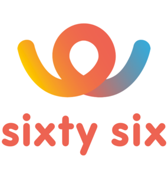
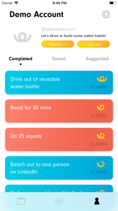
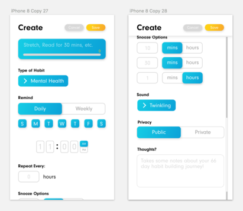
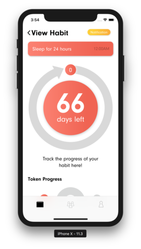
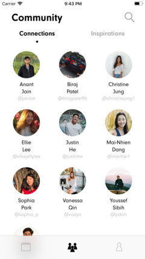
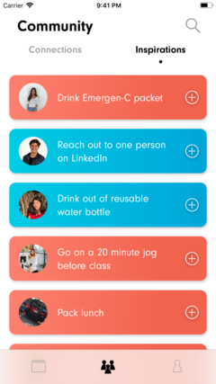
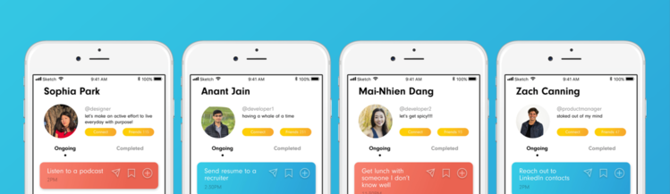

sixty six
some background
I was in the Spring 2018 cohort of LavaLab, an organization at USC. LavaLab is a startup community and USC's premier startup incubator- the 28 accepted students each semester are split into teams of 4 (2 developers, 1 product manager, and 1 designer). I was the backend developer on a team called sixty six. I created an Express.js server that handled all requests and data. I was also responsible for the creation and maintenance of our Mongo database.
the problem
Our team was interested in lifestyle and health related issues- specifically productivity. We agreed that a big reason why people can't keep up with their goals and habits is that they lose motivation due to lack of results and accountability. After doing some research, we found that recent studies have shown that it takes at least 66 days to fully establish a habit Additionally, after surveying over 2,000 students, we found that 75% of them don't feel supported by their communities, and many of them struggle with long term goals.
the solution

That's where sixty six comes in. It's a mobile app that combines that benchmark of 66 days and the idea of a supportive community. The app is a productive space for people who want to better themselves and make lasting change. And although there is competition in the productivity space, most apps are over-gamified and over-priced. Most of all, they lack community.

sixty six implements:
- customizable notifications
- visual tracking
- and an inspiring and supportive community
the user experience
Users can add habits to their account and label them as either internal (reading, meditating) or external (volunteer, talk to new people). When creating a new habit, users also have the freedom to customize when they are notified to complete the habit and how often.  As the user checks off the habit after each notification, the countdown to 66 days on the habit is updated. 
In the community section of the app, users can see what habits their connections are working on,  as well as draw motivation from their inspirations.  Users also have the option to create group habits with people they are connected with- this allows friends to keep each other motivated and accountable.
the takeaway
I can confidently say that being a part of the sixty six team has been one of the most rewarding parts of college so far! I had no experience with Node.js, MonogoDb, or hosting a database on a server (Heroku) and I came out of the project having learned many new things. I was proud that our team produced such a funtional app in so little time. The process of taking a product from the ideation to production stage with a full team was challenging but enriching, and our team ended up winning Best Demo at LavaLab's Demo Night. sixty six is not live, and our team has left it's future a little up in the air. However, we are all still excited about sixty six's mission, and will continue to work to give others a life, lived better.
the sixty six team <3
